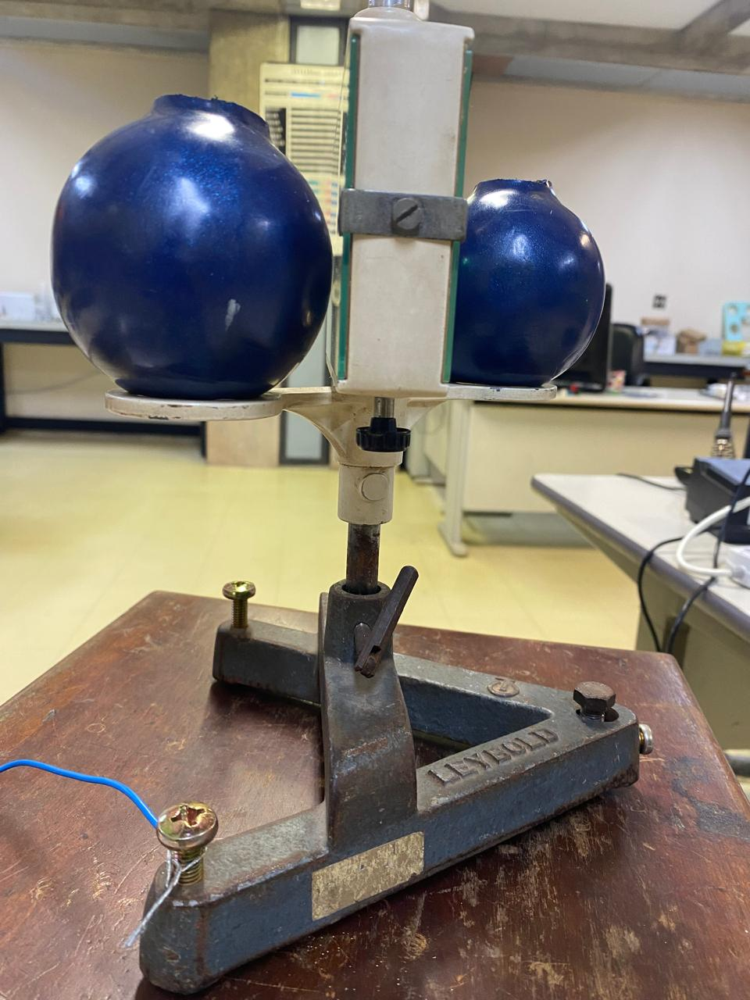

Designed and conducted experimental physics demonstrations

Before discovering my passion for robotics, I was drawn to physics, which led me to join EITA! (Innovation, Technology, and Learning Space), an experimental physics laboratory at UFMG. There, I was responsible for assembling and preparing physics experiments to be used as classroom demonstrations by professors.
One of my projects involved designing a wave and oscillation demonstration using an oscilloscope and various coaxial cables. By experimenting with different cable lengths, widths, and end connectors—some plain, others with resistors or capacitors—we analyzed how these factors influenced wave behavior on the oscilloscope, providing a hands-on understanding of wave propagation and signal transmission.
I also worked on restoring an old Cavendish balance, a device used to measure gravitational forces and determine the universal gravitational constant, G. My role involved conducting experiments, analyzing data through LabView, and fine-tuning measurements to ensure accurate results. This process included wrapping the balance in different materials, relocating it to minimize external disturbances, and even calculating the gravitational influence of our own lab structure on the experiment.